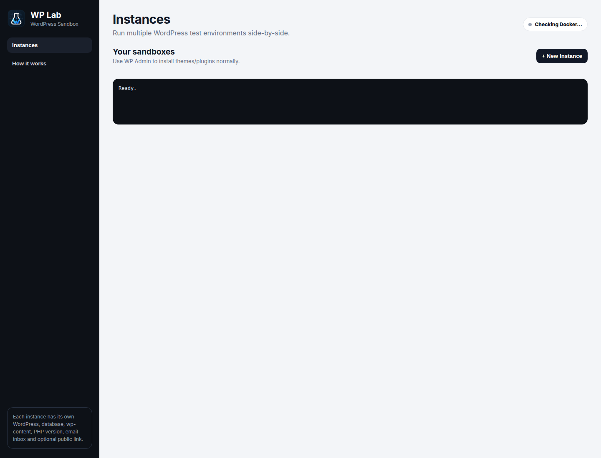
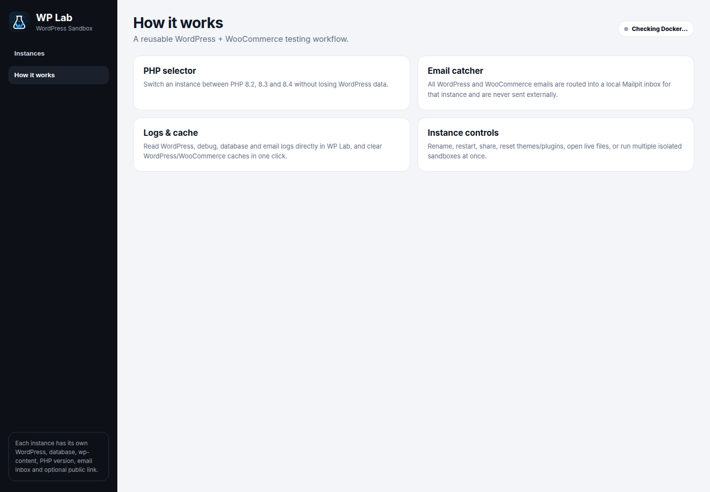

Local WordPress development without the repetitive setup
WP Lab is a Docker-powered local WordPress development environment for Linux. Run multiple WordPress and WooCommerce sandboxes, switch PHP versions, catch email locally, inspect logs, refresh frontend snapshots and share temporary client previews.

A WordPress & WooCommerce testing environment built for repeat work
Instead of rebuilding local stacks for every project, WP Lab keeps isolated WordPress development environments ready to create, test, reset and remove.
Multiple WordPress sandboxes
Run several isolated local WordPress sites side-by-side with separate files, database data and ports.
PHP 8.2, 8.3 & 8.4 testing
Switch PHP versions while preserving the WordPress site data for compatibility testing.
WooCommerce development
Test products, orders, checkout states, shipping, plugins and store customizations locally.
Mailpit email catcher
Capture WordPress and WooCommerce emails locally instead of sending test messages externally.
Logs and cache controls
Inspect WordPress, Apache, database and email logs and clear caches from the same UI.
Temporary client previews
Create short-lived HTTPS preview links with Cloudflare Tunnel without deploying a staging server.
Local WordPress development on Linux
WP Lab is designed for Ubuntu and Linux Mint style environments using Docker Engine and Docker Compose. It manages the repetitive container setup while keeping normal WP Admin workflows intact.
Install themes and plugins in WordPress as usual, generate demo content, test WooCommerce behavior, change PHP versions, inspect captured mail and logs, then reset or delete the sandbox when the job is done.

Run from source
git clone https://github.com/haseebgb92/WP-Lab.git
cd WP-Lab
npm install
npm startOr download the latest Debian package from GitHub Releases.
WP Lab FAQ
What is WP Lab?
WP Lab is a local WordPress and WooCommerce development environment for Linux that manages isolated Docker sandboxes from a desktop interface.
Can WP Lab run multiple local WordPress sites?
Yes. Each site has separate WordPress data, database data, ports, PHP configuration, Mailpit inbox and logs.
Can I test WordPress plugins on different PHP versions?
Yes. WP Lab currently supports PHP 8.2, 8.3 and 8.4 switching while preserving WordPress data.
Can I use WP Lab for WooCommerce development?
Yes. WP Lab includes WooCommerce testing helpers, demo data, local email capture, test shipping and a dummy payment gateway.
Does WP Lab work on Ubuntu and Linux Mint?
WP Lab is Linux-focused and is developed around Ubuntu/Linux Mint style systems with Docker Engine and Docker Compose.